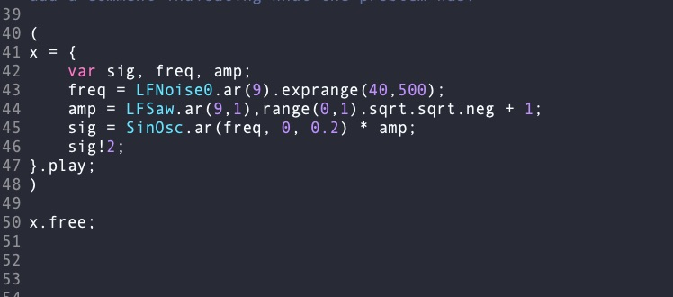
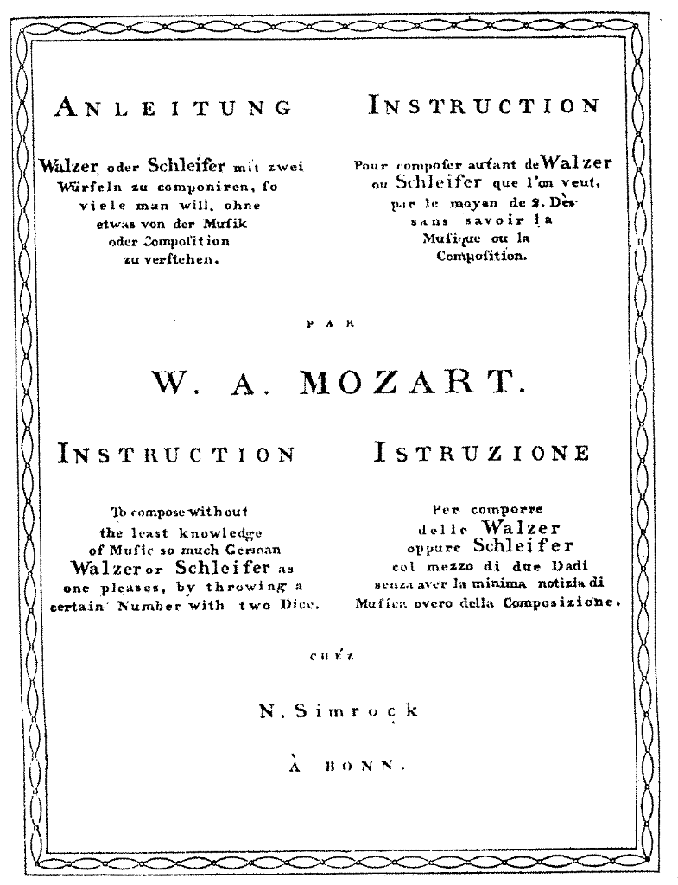
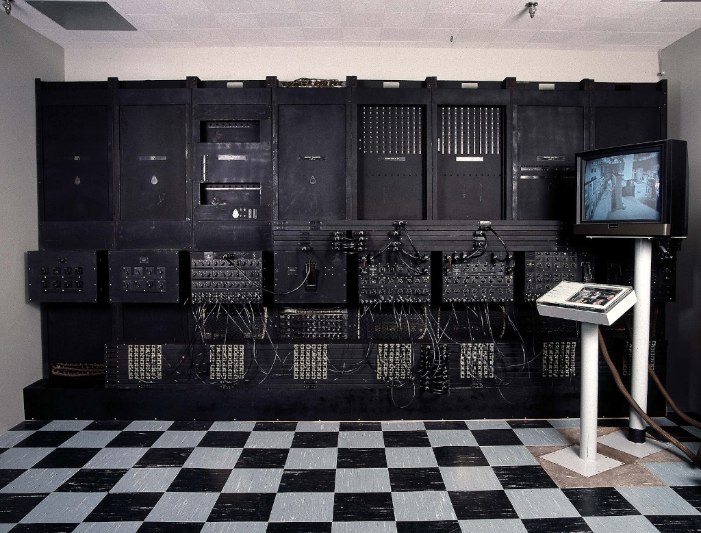

// musicoloxía · intelixencia artificial · investigación
A música, o son e a Intelixencia Artificial

Da música algorítmica de Mozart ás redes neuronais do presente: este artigo percorre a historia e o estado actual da Intelixencia Artificial no campo da música, desde as súas orixes na computación dos anos cincuenta até as aplicacións contemporáneas na composición, na educación e nos ecosistemas da industria musical.
A orixe da música algorítmica
En 1793, menos de dous anos despois da morte de Mozart, publicouse —e se reimprimi u en Bonn tres anos despois— o Musikalisches Würfelspiel en do maior, atribuído ao compositor salzoburgués. É moi probable que Mozart fixese esbozo deste xogo el mesmo, como apunta un bosquexo de voz de minueto conservado na folla do Adagio KV 516 f, aínda que esta atribución non ten o consenso unánime da comunidade investigadora. O propio Grove de 1936, na súa sección de "Obras espurias e dubidosas" de Mozart, cita "a gran cantidade de pezas para piano falsas" sen mencionar o Würfelspiel.

A obra funciona como unha melodía de minueto cuxos compases están ordenados mediante letras, de xeito que o intérprete lanza dous dados para seleccionar ao azar a alternativa correspondente a cada compás. As instrucións orixinais non outorgan a mesma probabilidade a cada alternativa: o número 7 aparece con maior frecuencia que o 2 ou o 12, de modo que o proceso de selección asigna probabilidades diferentes ás once opcións posibles.
A Real Academia Galega da Lingua define algoritmo como "un conxunto de regras que, aplicadas, permiten resolver un problema mediante un número finito de operacións". Baixo esta definición, o Würfelspiel convértese posiblemente na primeira peza musical baseada nun algoritmo estocástico con concepción formal de obra aberta: pioneira, deste xeito, no uso de técnicas compositivas máis propias do século XX que do clasicismo vienés do XVIII.
Podemos datar a música xerada por computadora na década de 1950, poucos anos despois de 1943, cando se iniciou en Filadelfia a construción do ENIAC (Electronic Numerical Integrator And Computer): o primeiro computador de propósito xeral baseado en circuítos electrónicos. Era un mastodonte de 27 toneladas que ocupaba 167 m², e contaba con 17.500 válvulas, 7.200 díodos de cristal, 1.500 relés, 70.000 resistencias, 10.000 condensadores e cinco millóns de soldaduras.

Illiac Suite (1957), de Lejaren Hiller e Leonard Isaacson, é a primeira partitura composta con axuda dunha computadora. Constitúe un exemplo temperán de algoritmia musical: emprega modelos aleatorios para a xeración de material sonoro, así como regras de filtrado que descartan o material xerado que non cumpre certos criterios estilísticos predefinidos.
Illiac Suite · Hiller & Isaacson, 1957 · Primeira partitura composta con computadora
Breve historia das redes neuronais
En 1943, o mesmo ano en que se iniciou a construción do ENIAC, Walter Pitts (matemático) e Warren McCulloch (neurofisiólogo) deseñaron o primeiro modelo algorítmico dunha neurona artificial: unha representación matemática simplificada dunha neurona real, capaz de combinar entradas binarias para producir unha saída.
Frank Rosenblatt, investigador pioneiro neste eido, ampliou o modelo Pitts-McCulloch introducindo a capacidade de aprendizaxe: o seu algoritmo, denominado perceptrón, é esencialmente unha función que decide se un vector de entrada pertence ou non a unha clase determinada. O perceptrón foi inventado en 1958 no Laboratorio Aeronáutico de Cornell, con financiamento da Oficina de Investigación Naval dos Estados Unidos.
O perceptrón concibírase inicialmente como un dispositivo hardware, non como un programa: a súa primeira implementación física, o Mark I Perceptron, contaba cunha matriz de 400 fotocélulas conectadas aleatoriamente como neuronas, con pesos codificados en potenciómetros e actualizacións de pesos realizadas mediante motores eléctricos. Rosenblatt declarou entón:
"Estamos a punto de presenciar o nacemento dunha máquina deste tipo, unha máquina capaz de percibir, recoñecer e identificar a súa contorna sen ningún adestramento ou control humano."
— Frank Rosenblatt, 1958
A pesar deste entusiasmo, a comunidade académica abandonou durante case vinte anos os estudos sobre redes neuronais ao considerar que nunca poderían alcanzar o grao de complexidade da mente humana. O resurgimento chegou nos anos oitenta, impulsado pola publicación de Parallel Distributed Processing: Explorations in the Microstructure of Cognition (MIT Press, 1987), obra de David Rumelhart e James McClelland. Os autores suxerían que os programas de computadora convencionais funcionan de xeito radicalmente distinto ao cerebro humano, o que explicaría por que até entón resultaran tan deficientes para tarefas que o cerebro resolve con facilidade —como o recoñecemento de obxectos en imaxes—. O seu enfoque, máis próximo á arquitectura neuronal biolóxica, quedou codificado nos seguintes elementos constitutivos dunha rede neuronal:
- Un conxunto de unidades de procesamento
- Un estado de activación para cada unidade
- Unha función de saída para cada unidade
- Un patrón de conectividade entre unidades
- Unha regra de propagación para distribución de patróns de actividade pola rede
- Unha regra de activación para combinar as entradas entrantes co estado actual da unidade
- Unha regra de aprendizaxe mediante a cal os patróns de conectividade se modifican pola experiencia
- Unha contorna dentro da cal o sistema debe operar
Hoxe, as redes neuronais acadan o seu máximo desenvolvemento grazas á confluencia de tres factores: a multiplicación de capas de procesamento profundo (deep learning), a capacidade computacional exponencialmente maior dos dispositivos actuais, e a dispoñibilidade masiva de datos derivada da xeralización de internet. Rosenblatt veuse, en certo sentido, vindicado.
Música e IA: o estado actual
O que moita xente descoñece é que a música xerativa por medios informáticos xa se practicou nos anos cincuenta do século pasado, empregando técnicas como a estocástica de Markov, as gramáticas xerativas ou os sistemas baseados en regras. O que cambiou ao longo de setenta anos é, por un lado, o desenvolvemento do hardware —que permite velocidades e volumes de procesamento antes impensables— e, por outro, a sofisticación dos algoritmos. As tarefas de fondo, en esencia, seguen sendo as mesmas.
Na actualidade, os asistentes de voz son un dos campos tecnolóxicos de maior crecemento, xa que posibilitan a interacción humana con dispositivos sen necesidade de contacto físico. Existe unha relación directa entre a IA aplicada á voz e a IA aplicada á música: en ambos casos, os datos de partida son ondas sonoras. A diferenza radica en que non se traballa directamente sobre a forma de onda, senón sobre unha representación gráfica do son obtida mediante a transformada de Fourier: un espectrograma que representa de xeito compacto a información de tempo e frecuencia. Estes espectrogramas aliméntanse a continuación como entradas de algoritmos de regresión ou clasificación.
Existe ademais outra representación amplamente usada en música que procede do campo do procesamento de voz: os MFCC (Mel Frequency Cepstral Coefficients), unha representación do espectro de potencia a curto prazo dun son, calculada como a transformada de coseno dunha escala de frecuencias logarítmica non lineal (escala mel). Os MFCC forman parte do cotiá tecnolóxico: utilízanse en sistemas de recoñecemento de voz, recoñecemento automático de números marcados nun teléfono, clasificación de xéneros musicais e medidas de similitude de audio, entre outras aplicacións.
De xeito moi xeral, a IA musical móvese en tres grandes eixes: composición (xeración de material musical novo), análise (clasificación, recuperación de información, descrición de contido) e interacción (interfaces intelixentes para músicos e usuarios). As dúas últimas seccións deste artigo darán conta de exemplos concretos en cada un destes ámbitos.
O uso da IA na composición musical
Huawei e a Sinfonía Inacabada de Schubert
Huawei utilizou o teléfono Mate 20 Pro para completar a Sinfonía n.º 8 de Schubert, coñecida como "Inacabada": Schubert deixou completos só o primeiro e o segundo movementos, mentres que o terceiro e o cuarto quedaron como borradores. O proxecto naceu como demostración do chipset Kirin 980. Nunha primeira fase, analizáronse mediante redes neuronais 90 obras de Schubert en formato MIDI para extraer os patróns estruturais do compositor; a continuación, a rede adestrou tamén sobre obras dos compositores que influíron en Schubert, para un contexto estilístico máis profundo; e finalmente analizáronse o ton, o timbre e as dinámicas dos movementos xa existentes. A IA sintetizou a melodía das partes terceira e cuarta. O compositor Lucas Cantor (gañador dun Emmy) e un colaborador de DreamWorks revisaron a saída durante 30 días, corrixiron erros melódicos, engadiron expresividade e escribiron a partitura orquestral. Cantor declarou:
"A máquina non podería rematar a peza sen min. Pero dificilmente tería escrito algo así sen un marco tan asombroso."
— Lucas Cantor, compositor
Schubert: Sinfonía n.º 8 "Inacabada" completada con IA · Huawei Mate 20 Pro / Lucas Cantor, 2019
Taryn Southern e Amper Music
I AM AI (2018) é o terceiro álbum de estudio da artista estadounidense Taryn Southern. Consta de oito canciones cuxas letras foron escritas pola propia artista e colaboradores, mentres que melodía e produción musical foron realizadas integramente por Amper, unha plataforma de IA musical que permite a calquera usuario crear música "orixinal" e libre de licenza baixo demanda. Un dos seus creadores, Silverstein, afirma que Amper non substituirá aos compositores humanos, senón que axudará a "crear unha próxima xeración de música" libre de restriccións de dereitos de autor.
Taryn Southern · Break Free · produción íntegra con Amper Music AI, 2018
Sony CSL e Flow Machines
O Laboratorio de Investigación de Sony CSL creou dúas cancións pop compostas con IA mediante Flow Machines, un sistema que aprende estilos musicais a partir de enormes bases de datos de cancións e, explotando técnicas de transferencia de estilos e optimización, pode compor en calquera estilo elixido polo compositor humano.
O proceso foi o seguinte: o compositor Benoît Carré seleccionou un estilo —"Os Beatles" para Daddy's Car; "American Songwriters" (Cole Porter, Gershwin, Ellington…) para Mr. Shadow— e colocou un lead sheet (melodía + harmonía) mediante FlowComposer. Logo, co sistema Recored, comparou fragmentos de audio reais coas follas xeradas, e finalmente encargouse da produción e mestura definitivas.
Sony CSL · Daddy's Car · Flow Machines + Benoît Carré, 2016
Estes tres exemplos son representativos dos avances da IA na composición musical, mais é honesto subliñar un elemento común: en todos os casos, a intervención humana foi imprescindible para o resultado final. Esta constatación sitúanos nunha reflexión máis ampla sobre o papel da música como expresión de humanidade —da que Epicuro, Rousseau ou Hanslick xa debateron nos seus séculos respectivos— e sobre o sentido dunha música baleira do seu contexto social, afectivo e cultural.
Educación musical na era da IA
En 2019, a UNESCO celebrou en Pekín a Conferencia Internacional sobre a Intelixencia Artificial e a Educación. O documento final, con 44 puntos dirixidos a gobernos e institucións, propón unha integración sistemática da IA nos sistemas educativos cara á axenda 2030, promovendo oportunidades de aprendizaxe permanente, equitativas e de calidade. Entre os seus puntos máis ilustrativos figura un aviso explícito:
"A interacción humana e a colaboración entre os docentes e os educandos deben seguir ocupando un lugar esencial na educación. Os docentes non poden ser desprazados polas máquinas, e os seus dereitos e condicións de traballo deben estar protexidos."
— UNESCO, Conferencia IA e Educación, Pekín, 2019
No eido da educación musical, xa se utilizan nas aulas universitarias, nos conservatorios e nos centros de música ferramentas baseadas en IA como:
- Moises.ai e Melody.ml: separación automática de pistas de audio mediante aprendizaxe automática, para edición multipista, mestura e sonorización.
- DeepBach: algoritmo adestrado sobre 400 corais de Johann Sebastian Bach, capaz de xerar novos corais no seu estilo, útil para a comprensión de conceptos harmónicos, rítmicos e melódicos na aula.
- Flow Machines: IA que analiza bases de datos de cancións e xera composicións nun estilo musical definido polo usuario.
- Music21 e Librosa: bibliotecas de Python para análise musical, estudos de harmonía, separación de voces e seguimento do progreso interpretativo (afinación, dinámica, agóxica).
No ámbito da investigación, cómpre distinguir dous tipos de actores. Por un lado, os grupos universitarios —como o Grup de Tecnologia Musical da Universitat Pompeu Fabra, liderado por Xavier Serra, referente mundial en Music Information Retrieval (MIR) e creadores da biblioteca Essentia, de C++ con conectores Python para análise, descrición e síntese de audio—. Por outro, as grandes corporacións, cuxa motivación combina o descubrimento de novos algoritmos coa implementación a escala produción: Spotify, Apple Music ou YouTube Music non só desenvolven algoritmos de clasificación, senón que os implementan para recomendar cancións e interactuar con centos de millóns de usuarios. Magenta (Google Brain) é un proxecto de investigación de código aberto que explora o papel da aprendizaxe automática no proceso creativo, desenvolvendo novos algoritmos de aprendizaxe profunda e por reforzo para a xeración de cancións, imaxes e outros materiais, dispoñibles en Github baixo TensorFlow.
A IA nos sectores empresariais da música
A implementación da IA na industria musical acelerouse de xeito notable nos últimos cinco anos. A música ambiental xerada por IA, a xeración de música libre de dereitos para creadores de contido e a masterización asistida por automatización convertéronse en sectores consolidades, e os sistemas de recomendación tiveron implicacións que van moito máis alá do streaming musical.
AIVA
Luxemburgo
Motor de IA para bandas sonoras. Permite a compositores e creadores xerar orixinais ou subir o seu traballo para crear variacións. Ofrece dereitos de uso completos segundo o plan elixido.
⟶ Aposta pola colaboración entre creatividade artificial e orgánica, non pola substitución.
Amper Music
Nova York
Ferramenta que interpreta, compón e produce música personalizada para contido multimedia. O usuario elixe estilo, estado de ánimo e duración sen necesitar coñecementos musicais.
⟶ Adquirida por Shutterstock en 2020. O seu sistema Score permite crear unha pista con IA en menos de 10 clics.
Brain.fm
Chicago
Aplicación web e móbil de música ambiental para favorecer o descanso, a relaxación e a concentración. O motor de IA engade características acústicas para inducir estados mentais determinados en 10-15 minutos.
⟶ Estudo piloto independente mostra taxas maiores de atención sostida con Brain.fm fronte a música convencional.
LANDR
Montreal
Plataforma para crear, masterizar e vender música. O software de masterización analiza o estilo das pistas e mellora os parámetros sobre unha biblioteca de referencia de xéneros e estilos.
⟶ Permite distribuír en plataformas de streaming sen pasar por un estudio profesional.
Muzeek
San Francisco
Algoritmo que analiza vídeos combinando duración e ritmo para xerar bandas sonoras relevantes e con licenza para creadores, desenvolvedores e axencias.
⟶ Permite emparelar legalmente vídeos e música ante o endurecemento das políticas de dereitos de autor nas plataformas sociais.
Pandora
Oakland
Servizo de radio personalizado que aprende dos "gústame" e "non me gusta" do usuario para afinar recomendacións. Con acceso a 80.000 millóns de selecciones, utiliza ML para examinar miles de novos lanzamentos á semana.
⟶ Os seus algoritmos axudan tamén a detectar bots e identidades falsas na plataforma.
Splash
Brisbane
Comezou como Popgun en 2017 con instrumentos dixitais intelixentes; pivotou a ferramentas musicais asistidas por IA en contornos de xogo como Roblox. Actualmente enfocada na intersección de composición intelixente e metaverso.
⟶ Bitkraft Ventures e Amazon Alexa Fund colideraron unha ronda de 20 millóns de dólares en novembro de 2021.
Shazam
Londres
Un dos primeiros servizos de IA de consumo masivo. Toma a pegada dixital dunha canción e compáraa cunha biblioteca masiva de música pregravada para identificala en segundos.
⟶ Parte da familia Apple. Resolveu durante décadas a pregunta "Quen canta isto?" en cafés, tendas e radios.
Spotify
Estocolmo
Servizo de streaming con máis de 381 millóns de usuarios en 184 mercados. A función "Discover Weekly" xera listas personalizadas con música non escoitada pola persoa usuaria, baseándose nos seus hábitos de escoita.
⟶ Transformou a industria do CD e das descargas ilegais cara ao streaming masivo e a descuberta de artistas emerxentes.
iZotope
Cambridge, MA
Pioneira na produción musical asistida por IA desde 2016, con Track Assistant. Ofrece asistentes de mestura vocal, reverberación e masterización baseados en IA. O seu Spire Studio converteu nun éxito durante a pandemia.
⟶ Utilizado por Beyoncé, Kendrick Lamar e Foo Fighters para mesturas e masterizacións.
Output / Arcade
Los Ángeles
O plugin Arcade permite crear e manipular bucles en pistas longas. A ferramenta Kit Generator, con IA, permite descargar un kit completo de sons a partir de mostras de audio discretas.
⟶ Utilizado por Drake e Rihanna, e nas bandas sonoras de Black Panther e Game of Thrones.
O que estes exemplos evidencian é que a IA xa está dentro das entrañas da vida cotiá das persoas, aínda que estamos aínda nunha fase inicial. Queda moito camiño por percorrer en aspectos tecnolóxicos, éticos, sociais, económicos e estéticos. Esperamos que este achegamento a estes temas resultara útil e suxerente.
Referencias e recursos
- Iyer, V. (ed.) (2022). Handbook of Artificial Intelligence for Music. Springer. VitalSource
- Cádiz, R. F., Macaya, A., Cartagena, M. e Parra, D. (2021). Creatividad en redes musicales xerativas: evidencia a partir de dous estudos de caso. Frontiers in Robotics and AI, 8, 680586. DOI
- Rumelhart, D. E. e McClelland, J. L. (1987). Parallel Distributed Processing: Explorations in the Microstructure of Cognition, vol. 1-2. MIT Press.
- Hiller, L. e Isaacson, L. (1959). Experimental Music: Composition with an Electronic Computer. McGraw-Hill.
- UNESCO (2019). Documento final da Conferencia Internacional sobre a IA e a Educación. Pekín. Enlace
- Serra, X. et al. Essentia: biblioteca de análise de audio de código aberto. essentia.upf.edu
- Google Brain. Proyecto Magenta. magenta.tensorflow.org